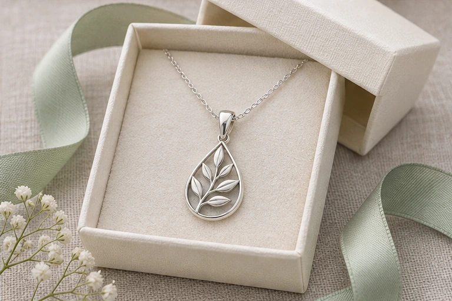

Ilustracja poglądowa wygenerowana AI; nie dokumentuje konkretnego produktu ani aktualnej oferty punktu.
Biżuteria srebrna to znacznie więcej niż łańcuszek i pierścionek. Obejmuje delikatne ozdoby na co dzień, wyraziste dodatki oraz przedmioty o znaczeniu pamiątkowym. Wybierając ją, warto rozróżniać trzy rzeczy: rodzaj ozdoby, materiał, z którego została wykonana, i sposób wykończenia powierzchni. Każda z nich wpływa na wygodę noszenia i pielęgnację.
Kolczyki srebrne: sztyfty, koła i modele wiszące
Sztyfty, potocznie nazywane wkrętkami, zwykle przylegają do płatka ucha i są dyskretnym dodatkiem. Koła występują w wielu średnicach i grubościach, a kolczyki wiszące mogą mieć formę łańcuszków, geometrycznych elementów lub oprawionych kamieni. O wygodzie decydują nie tylko rozmiar i wygląd, lecz także masa oraz rodzaj zapięcia.
Przed zakupem sprawdź, czy zapięcie działa płynnie i pewnie trzyma kolczyk. Duży model wykonany z pustych elementów może być lżejszy niż mały, pełny wyrób. Przegląd mechanizmów znajdziesz w artykule o rodzajach zapięć w srebrnej biżuterii.
Pierścionki i obrączki
Srebrne pierścionki bywają gładkie, ażurowe, szerokie lub ozdobione kamieniami. Obrączka ma najczęściej formę opaski, ale również może zawierać grawerunek i dekoracyjne detale. Przy wyborze ważny jest rozmiar: szersza szyna może wymagać innego dopasowania niż cienka. Pierścionka regulowanego nie należy wielokrotnie mocno rozginać, bo metal może się osłabić lub pęknąć.
Sprawdź też wysokość oprawy i to, czy ozdoba nie zaczepia o ubrania. Pomocny będzie poradnik jak dobrać rozmiar srebrnego pierścionka.
Łańcuszki, naszyjniki i zawieszki
Łańcuszek składa się z połączonych ogniw i może być noszony samodzielnie lub z zawieszką. Naszyjnik to szersza kategoria: może mieć rozbudowaną część ozdobną, kilka rzędów albo stałe elementy dekoracyjne. Zawieszki obejmują między innymi medaliony, krzyżyki, medaliki i motywy geometryczne.
Wśród popularnych splotów są ankier, pancerka, figaro i królewski. O wytrzymałości nie rozstrzyga sama nazwa splotu: liczą się grubość ogniw, jakość połączeń i konstrukcja pełna lub dmuchana. Masa zawieszki powinna pasować do łańcuszka, a jej uszko musi swobodnie przez niego przechodzić.
Bransoletki i ozdoby na kostkę
Bransoletki srebrne mogą być łańcuszkowe, sztywne, otwarte lub złożone z segmentów. Popularne są również modele z przywieszkami, do których można dodawać kolejne elementy. Przy zakupie uwzględnij obwód nadgarstka, potrzebny luz oraz miejsce zajmowane przez ozdoby. Zbyt ciasna bransoletka będzie uciskać, a zbyt luźna może łatwiej zahaczać o przedmioty.
Ozdoby na kostkę wymagają dopasowania także do ruchu podczas chodzenia i do obuwia. Cienkiego łańcuszka nie warto traktować jak wytrzymałej opaski sportowej.
Broszki, spinki i komplety
Broszki przypina się do ubrania, dlatego oprócz wzoru ważne są sprawna igła i zabezpieczenie zapięcia. Srebro wykorzystuje się również w spinkach do mankietów, spinkach do krawata i ozdobach do włosów. Komplet jubilerski łączy kilka dopasowanych stylistycznie wyrobów, na przykład kolczyki z naszyjnikiem. Każdy element warto jednak obejrzeć osobno, ponieważ może mieć inną konstrukcję i stopień zużycia.
Próba srebra a wykończenie biżuterii
Próba 925 oznacza 92,5% srebra w stopie. Pozostałe metale poprawiają właściwości użytkowe materiału; czyste srebro jest stosunkowo miękkie. Starsza biżuteria może mieć inne próby, a samo wybite oznaczenie nie zastępuje sprawdzenia materiału. Wyrób posrebrzany ma tylko warstwę srebra na innym podłożu i nie jest tym samym co biżuteria ze stopu srebra.
Powierzchnia może być polerowana, matowa, oksydowana, pozłacana lub rodowana. Rodowanie polega na pokryciu ozdoby cienką warstwą rodu — przeczytaj, do czego służy rodowanie srebra. Powłoka nie zmienia próby stopu znajdującego się pod nią. Przy kamieniach sprawdź również, czy są naturalne, syntetyczne czy stanowią imitację; wpływa to na sposób pielęgnacji i wartość gotowego wyrobu.
Co ma znaczenie przy sprzedaży srebrnej biżuterii?
Przy wycenie kruszcu liczą się potwierdzona próba i masa srebrnej części. Kamienie, stalowe sprężyny i inne elementy mogą wymagać odliczenia. Cena zakupu w salonie obejmuje także projekt, wykonanie i marżę, więc nie odpowiada automatycznie wartości metalu w skupie. Biżuteria markowa lub zabytkowa może mieć osobną wartość handlową, którą warto ocenić przed sprzedażą na kruszec.
Jeżeli przygotowujesz biżuterię do wyceny w Gorzowie Wielkopolskim, nie demontuj kamieni ani nie poleruj agresywnie powierzchni. Sprawdź cennik skupu srebra i skontaktuj się z punktem, aby ustalić sposób oględzin.